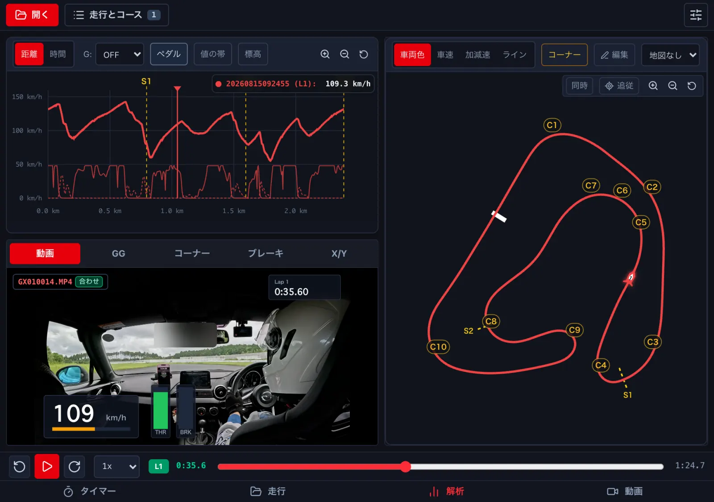
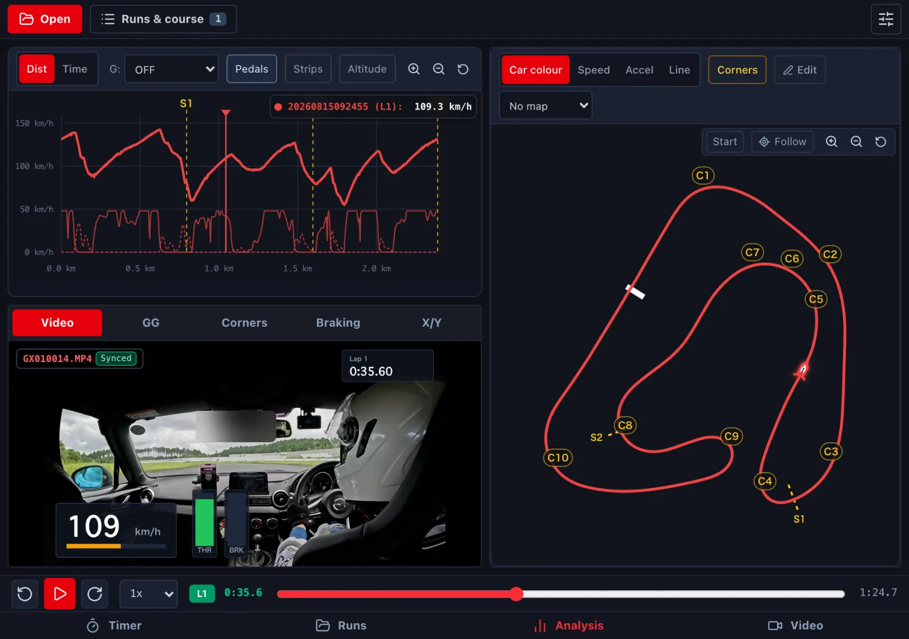
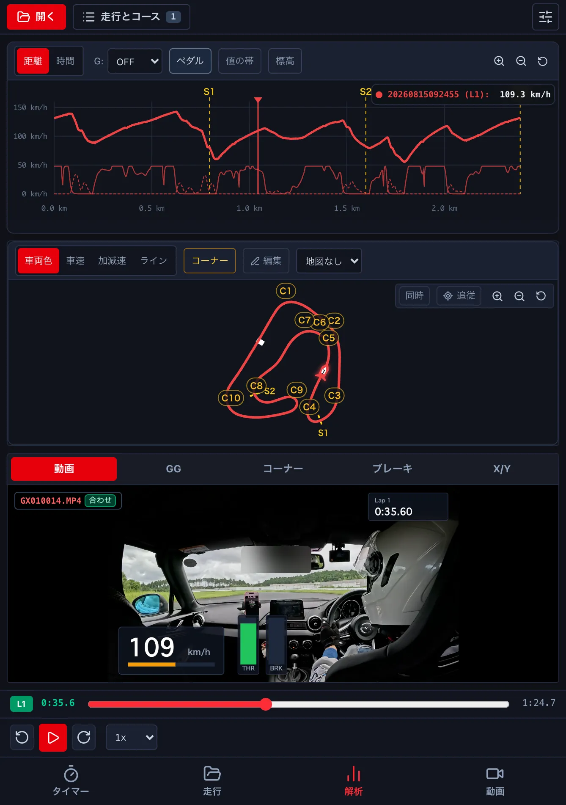
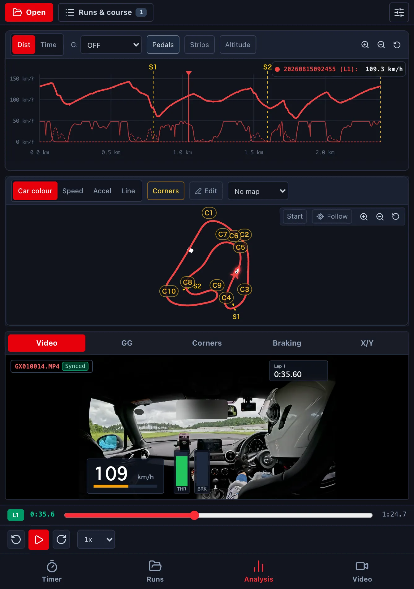

折りたたみの iPhone (Duo)The folding iPhone (Duo)
画面を閉じているときはふつうの iPhone と同じです。開くと、グラフ・動画・コースマップを同時に出す広い配置になります。Folded, it works like any iPhone. Unfolded, you get a wider layout with the graph, video and course map on screen together.
-
開いた画面の解析は、左にグラフと下の欄 (はじめは 動画)、右にコースマップです。Unfolded, Analysis shows the graph and the bottom panel (video by default) on the left and the course map on the right.


-
縦に持つと、グラフ・コースマップ・下の欄が上から並びます。Held upright, the graph, course map and bottom panel stack from the top.


- 開く・閉じるで、開いている走行・周・再生の位置・地図の拡大は変わりません。再生中なら、そのまま続きます。閉じると、最後に触った欄が出ます。Folding and unfolding keeps the open run, lap, position and map zoom; playback keeps going. When you fold it, the panel you last touched is shown.
- 動画の 比べる は、開くと左右に並びます (→ E3)。Video Compare goes side by side when unfolded (→ E3).
このページは折りたたみの iPhone 向けです。iPad mini の縦置きや、iPad の Split View のブラウザ版でも、同じ広い配置になります。This page is for the folding iPhone. The browser version on an iPad mini in portrait or in iPad Split View uses the same wider layout.